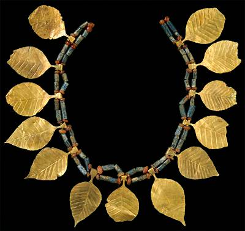

The Challenge -
Jewellery

This necklace was worn by one of the sacrificial victims found by Leonard Woolley in the tomb of Queen Pu-abi at Ur. The tombs date to around 2600 B.C. All the women buried in the Royal Graves wore similar jewellery. The necklace is made from carnelian, lapis lazuli and gold, materials which are not found in Sumer.
To learn more about jewellery like this visit the Tombs Explore.
|
|